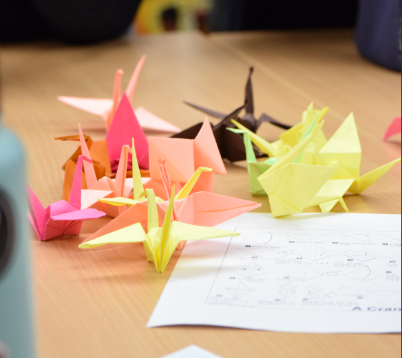
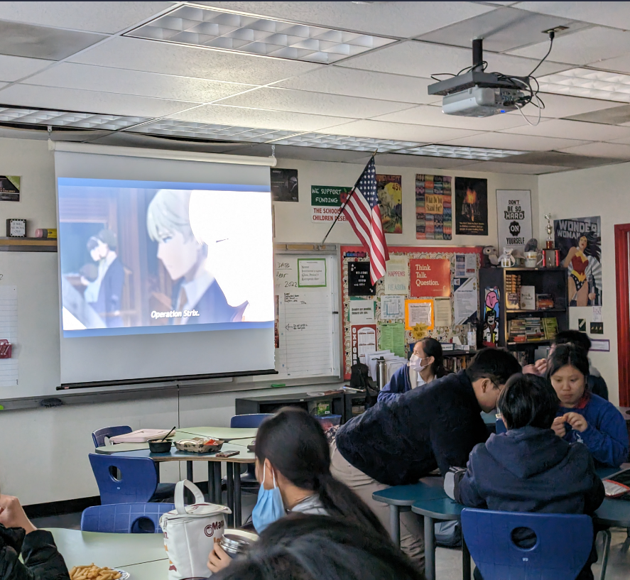
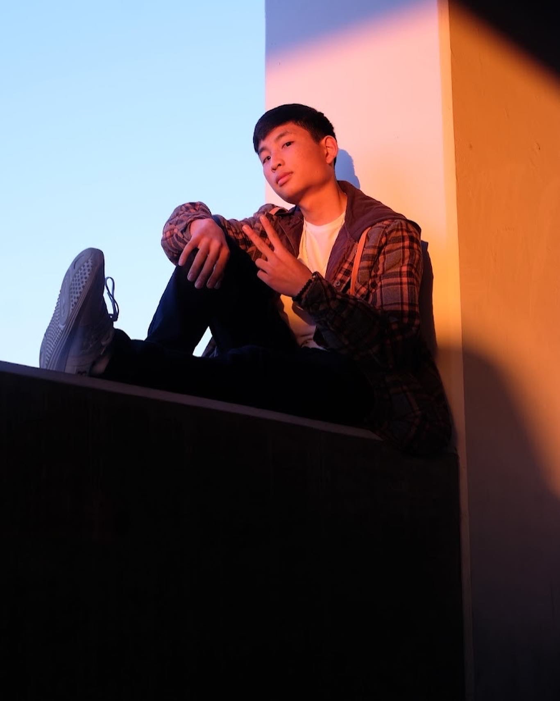
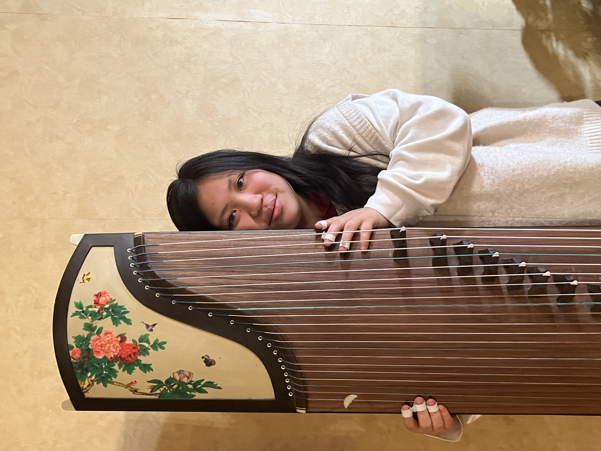
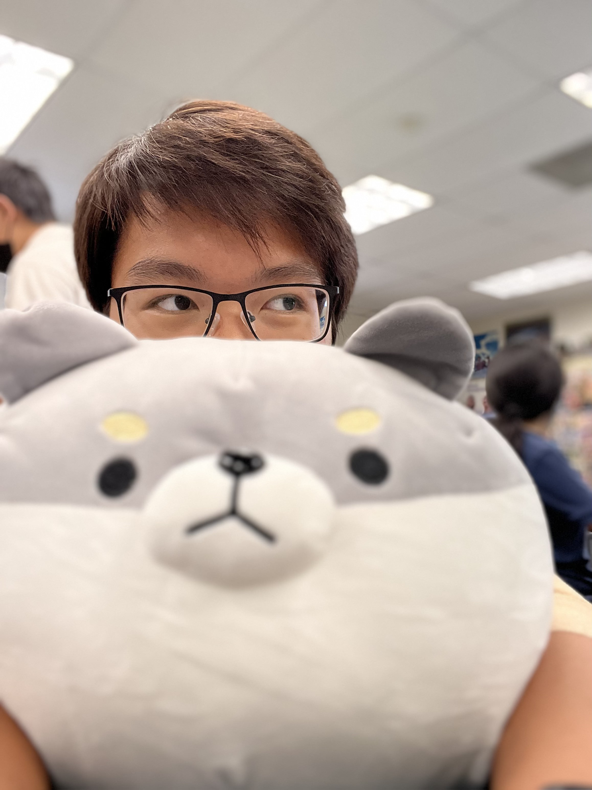
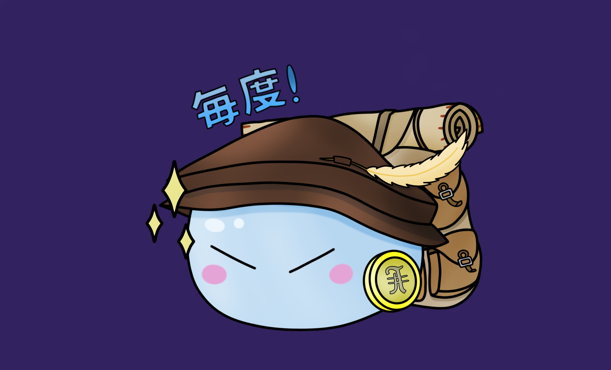
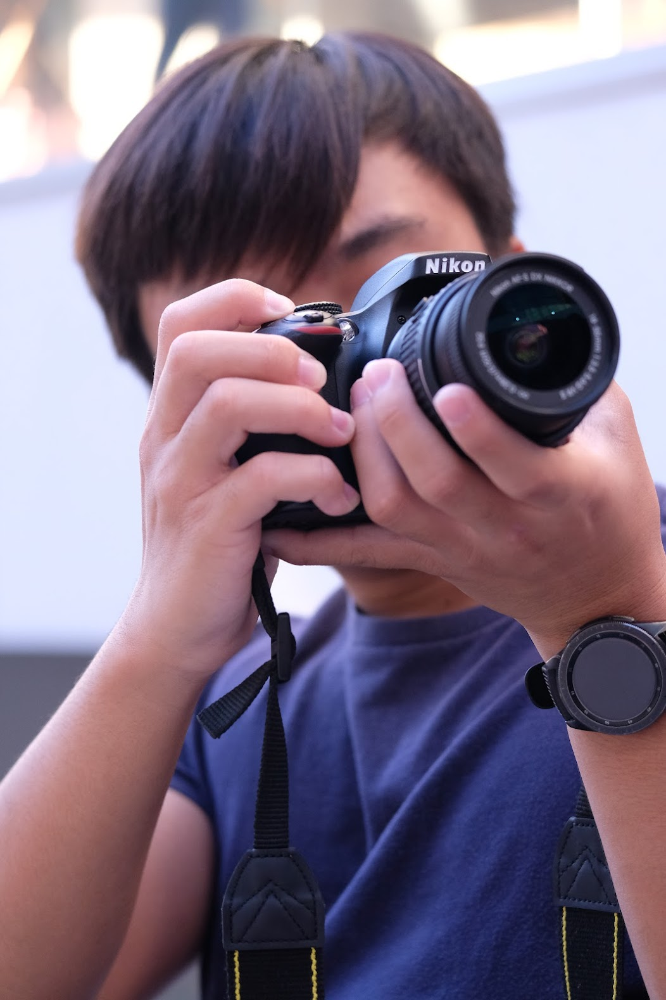
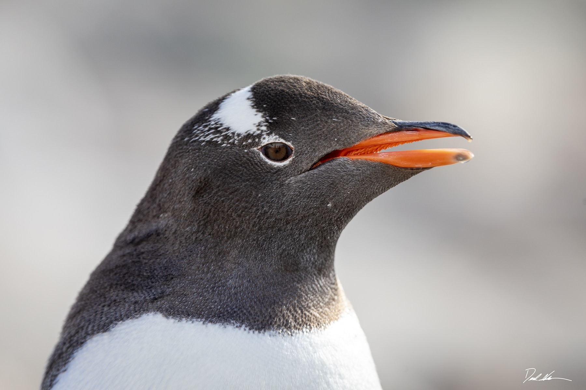
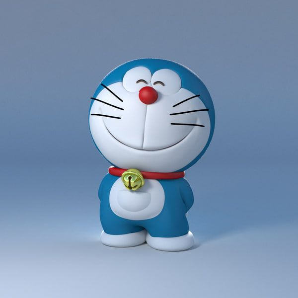

Welcome to the OAJC website.
Explore what our club has done in the past year alone. From Tokyo to Okinawa, our club focuses on Japanese culture and language.
Come Wednesdays during lunch @ Room 404
Ok but who are we exactly?
Our mission is to spread Japanese culture through fun activities planned by our board every week.
Just look to the right to rewatch some of our favorite memories.


Our Recent Events

Buddying With Japanese Students
In November, a few lucky members had the privilege to serve as student ambassadors for the entire day in which Japanese students from Fujimigaoka High School for Girls were at Oxford. During the welcoming assembly, the girls from FHS showcased their talents in the arts with their captivating performances in addition to the 10+ booths they set up featuring traditional activities popular in Japan.

Servathon “Cultural Crafts”
In collaboration with International Club, volunteers were able to serve both their local and global communities. For Long Beach Rescue Mission, an organization whose mission is to support the homeless community, we were able to donate 200+ furikake onigiris made in the span of 3 hours. For the Children’s Peace Monument in Hiroshima, Japan, to commemorate the lives lost by the atomic bomb, we began our mission to fold 1000 paper cranes which we will continue throughout the year. Finally, we continued a crocheting project first started by alumni to complete a blanket for a local senior center.

Watch Party Bonding Event
Hosted in room 404, our very first bonding event was a marathon of SpyXFamily episodes and endless snacking on mochi, rice crackers, and pocky. With donations from board members, we were able to make this event completely free of charge in hopes of creating a space and time for JC members to unwind and just enjoy Japanese entertainment.
Our Current Board
President: Nina Larson
The founder, CEO, and philanthropist herself.

Vice President: Ryan Imai
I help Nina with managing the chaos that is our board.

Secretary: Kathleen Le
I play way too many instruments. And I also send emails. Way too many emails.

Treasurer: Thien Lac
If you're creating a fundraiser, I'm your man. If not, I can still help.

Activities: Nicholas Hamada
I help Derek with his APUSH assignments. I also like to draw.

Historian: Dylan Nguyen
Anime is a lifestyle. So are anime conventions and anything anime.

Publicity: Minh-Quan (Minnie) Pham
Some people call me Minnie. Others call me a photographer. You can call me both.
Publicity: Kaden Bui
I help Minnie take photos. Haikkyu is the reason I play volleyball.

Tech Chair: Vince Vatcharasumphun
I make most of the videos you see on Instagram. I really, really like penguins.

Tech Chair: Derek Maeshiro
I work on the website you're viewing right now. Feel free to say hi!